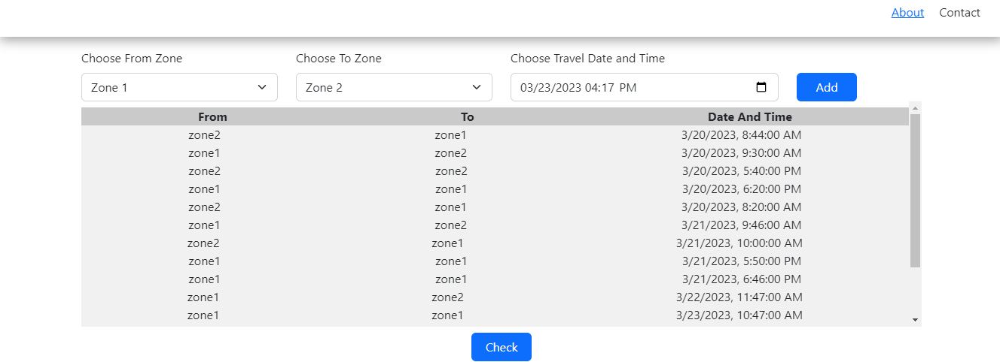
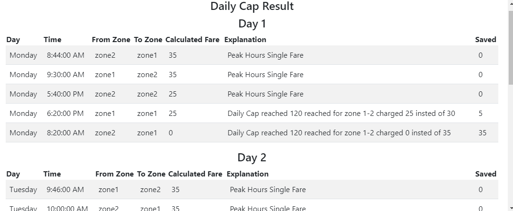
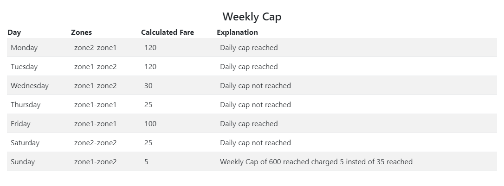

Start by entering your travel details including the starting point (from), destination (to), date and time of travel.
The tool will automatically determine whether it is peak or off-peak hours based on the inputted date and time.
The tool will calculate the ride cost based on the starting point and destination.
This use a pre-defined algorithm to determine the cost based on distance and time traveled.



The tool will calculate the daily cap and weekly cap based on the pricing structure. These are limits on the amount that a user can be charged for rides within a given time period.
Commuter can get Fare Free travel after reaching daily/weekly fair cap.
Git Hub Repository
Note: By Default Application Provided with Dummy Data Press On Mock Data Button to Add into Travel List